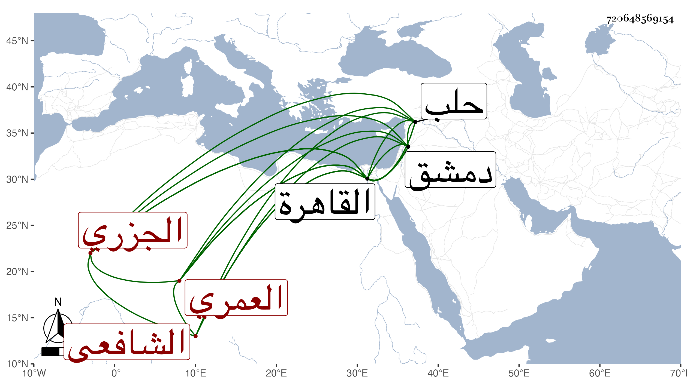

0902Sakhawi.DawLamic.ITO20230111-ara1.EIS1600.720648569154
Biography ID: 720648569154
634
عبد الغني بن موسى بن أحمد العماد الجزري العمري الشافعي نزيل القاهرة ويعرف بعماد الكردي . ممن لازم الشرواني وتميز في فنون من العقليات وصحب عبد الله الكوراني وتنزل في الشيخونية وغيرها من الجهات وحضر عند البامي بل قرأ عليه المنهاج وجل الحاوي ولازم إمام الكاملية في الفقه وغيره وجاور في سنة ثلاث وثمانين وأقرأ هناك العربية والمنطق وغيرهما ولا زال يعاتب ويضارب ويصيح وينوح ويهجر ويفجر بسبب الرزق خصوصا وقد زوج ولده وزادت عياله ومع ذلك فلا يصل بل ربما يتمقته السلطان ويخرجه غيره في غالب السخرية والغالب عليه الصفاء ، ثم أنه حج في موسم سنة خمس وتسعين أجيرا عن امرأة وعلى السحابة المزهرية ورجع مع الركب فأعطاه السلطان في أول يوم من صفر مشيخة سعيد السعداء ولقيني بعد بأيام فذكر لي أن مولده في شوال سنة خمس وعشرين وأن قدومه القاهرة من حلب بعد أن أخذ بها عن يوسف الكردي وأبي ذر في المحرم سنة سبع وأربعين فأخذ عن شيخنا بالبيبرسية وبالكاملية وحضر عند القاياتي في الكشاف بقراءة الزين طاهر وعند العلم البلقيني وآخرين ولم يتهيأ له لقى الونائي لا بدمشق لكونه كان قدم القاهرة ولا بها .
